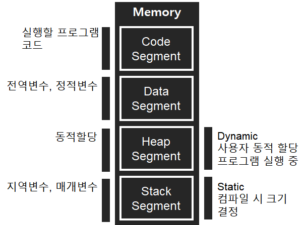

* 개인적인 공부 내용을 기록하는 용도로 작성된 포스팅 이기에 잘못된 내용이 있을 수 있습니다.
프로그램을 실행 시키면 실행 되기에 앞서 프로그램이 메모리에 로드(Load)된다. 그렇기에 프로그램안에 정의된 여러가지 변수와 함수들을 저장하기 위한 메모리가 필요하다.
운영체제(Operating System)는 대표적으로 다음 4가지 종류의 메모리 공간을 제공한다.

1. 코드영역 (Code Segment)
가장 낮은 수준의 메모리 영역으로, 프로그램 내부 소스파일에 정의된 함수 코드가 정의되는 영역이다. 텍스트 영역 이라고 부르기도 한다.
2. 데이터영역 (Data Segment)
전역변수 혹은 정적변수가 저장되는 공간이다. (상수, 리터럴, 전역변수, Static 등..)
데이터영역은 프로그램 시작 시 할당되고, 프로그램 종료 시 소멸된다.
3. 힙영역 (Heap Segment)
힙영역은 사용자가 직접 관리하는 메모리 영역으로, 프로그래머에 의해서 메모리 공간이 동적으로 할당되고 해제된다. (대표적인 예시로 동적배열이 있다.)
C언어는 malloc, calloc, free .. 등의 힙영역을 동적으로 관리하기 위한 함수를 제공하며 C++은 new, delete 등의 함수를 제공한다.
런타임(Run Time)에 메모리가 생성된다.
4. 스택영역 (Stack Segment)
스택영역은 가장 높은 수준의 메모리 영역으로, 지역변수 혹은 매개변수가 저장되는 영역이다.
스택영역은 함수 호출과 함께 할당 , 호출 완료 시 소멸하며, LIFO(Last In First Out) 방식으로 동작하기에, 가장 늦게 저장된 데이터가 가장 먼저 나오는 구조이다.
컴파일 타임(Compile Time)에 메모리가 생성된다.
* 런타임(Run Time) - 프로그램 실행 중 (Dynamic)
* 컴파일 타임(Compile Time) - 코드가 2진수로 변환되는 순간 (Static)